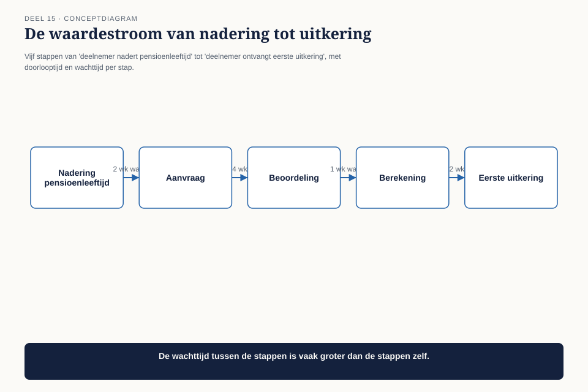
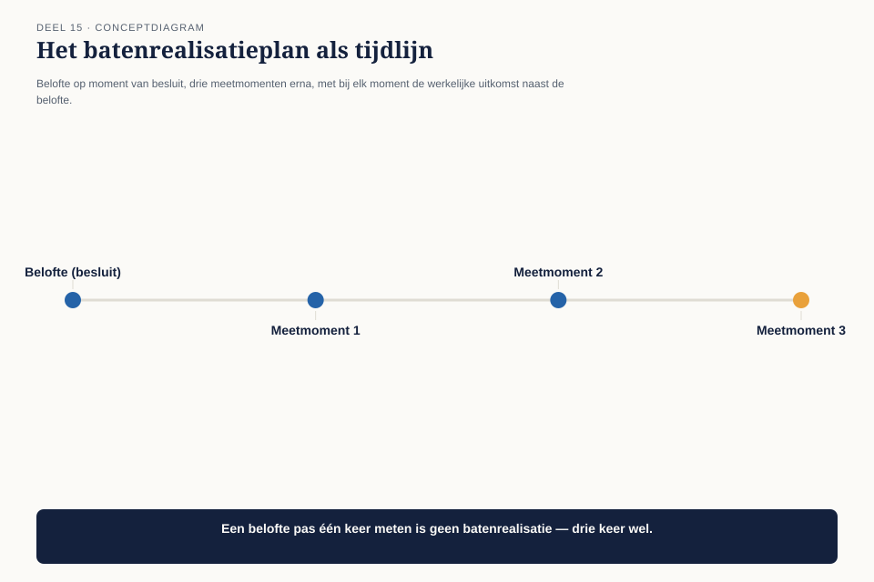

Deel 15 — Value model I
Slidedeck · Ductus-cursus BTABoK · Niveau 2 · deel 15 van 30 · 31 slides
Slide 1 — Titel: Value model I
Deel 15 — twee dagdelen
Ductus
Slide 2 — Agenda: Deze twee dagdelen
- De vraag van de stuurgroep
- Objectives: van ambitie naar toetsbaar doel
- De waardestroom
- Batenrealisatie
- Waardemethoden
- De Architect Value-benadering
- Het antwoord aan de stuurgroep
Slide 3 — Sectie: 1. De vraag van de stuurgroep
Slide 4 — Citaat: Zeven maanden, drie architecten fulltime. Wat heeft dat opgeleverd, in euro's of
Zeven maanden, drie architecten fulltime. Wat heeft dat opgeleverd, in euro’s of in aantoonbaar risico dat niet is opgetreden?
— de stuurgroep
Slide 5 — Figuur: Budget naast een lege kolom

Slide 6 — Statement: Losse antwoorden bestaan
Niemand heeft ze ooit opgeteld
Slide 7 — Sectie: 2. Objectives
Slide 8 — Tabel: Ambitie naar objective
| Ambitie | Objective |
|---|---|
| “Soepele klantervaring” | 0 kritieke breukpunten, volgende kwartaalmeting |
| “Minder technische schuld” | % zonder test: 35% → <15%, 2 kwartalen |
Slide 9 — Statement: Geen nieuwe meetinstrumenten
Bestaande instrumenten verbonden aan een datum
Slide 10 — Opdracht: Opdracht 1 — Ambitie naar objective
15 minuten, individueel
Vier ambities herschrijven · elk met een meetdatum
Slide 11 — Sectie: 3. De waardestroom
Slide 12 — Figuur: Van trigger tot uitkering

Slide 13 — Statement: Minder dan 20% is daadwerkelijke verwerkingstijd
De rest is wachten
Slide 14 — Bullets: Waar architectuurwerk het meeste oplevert
- Niet: interne verwerking versnellen (2 dagen)
- Wel: de handmatige controle wegnemen (tot 10 dagen wachttijd)
Slide 15 — Opdracht: Opdracht 2 — Je eigen waardestroom
30 minuten, tweetallen
Doorlooptijd én wachttijd · waar zit het meeste van de tijd?
Slide 16 — Sectie: 4. Batenrealisatie
Slide 17 — Figuur: Belofte, drie meetmomenten, werkelijkheid

Slide 18 — Statement: Waarderen vooraf voelt verplicht
Toetsen achteraf voelt vrijblijvend — en gebeurt daarom bijna nooit
Slide 19 — Bullets: Het koppelvlak, drie maanden later
- Belofte: 18.000-45.000 euro per jaar
- Meting: herstelwerk naar nul
- Bevestigd, met een cijfer — niet met een aanname
Slide 20 — Opdracht: Opdracht 3 — Het batenrealisatieplan
25 minuten, individueel
Eigen investering · als je geen meting hebt: dat IS de bevinding
Slide 21 — Sectie: 5. Waardemethoden
Slide 22 — Bullets: Twee rekenmethoden
- Kosten van uitstel — elk kwartaal wachten heeft een prijs
- Cumulatieve versus eenmalige baten — terugkerende baten wegen zwaarder over tijd
Slide 23 — Opdracht: Opdracht 4 — Kosten van uitstel
15 minuten, individueel
Eigen uitgestelde investering · wat kost elk kwartaal wachten?
Slide 24 — Sectie: 6. De Architect Value-benadering
Slide 25 — Figuur: De cyclus

Slide 26 — Statement: Geen perfecte voorspellingen
Een leercyclus die elke volgende voorspelling scherper maakt
Slide 27 — Sectie: 7. Het antwoord
Slide 28 — Bullets: Vijf investeringen, vijf uitkomsten
- Bevestigde besparing overtreft het architectuurbudget ruim
- Twee van de vijf beloftes niet volledig uitgekomen — niet verzwegen
- Bij één: een foute aanname blootgelegd, meegenomen in de volgende waardering
Slide 29 — Opdracht: Opdracht 5 — Het antwoord aan de stuurgroep
30 minuten, groepen van 3-4
Minstens 3 investeringen · wees eerlijk over wat niet uitkwam
Slide 30 — Bullets: Wat deze twee dagdelen hebben opgeleverd
- Objectives: toetsbaar, met datum
- De waardestroom: waar de tijd echt zit
- Batenrealisatie: de zelden gezette, cruciale stap
- De Architect Value-benadering als doorlopende cyclus
Slide 31 — Titel: Volgende keer
Deel 16 — Value model II
Technische schuld als financieel begrip. De dekkingsgraad van de architectuurpraktijk zelf.